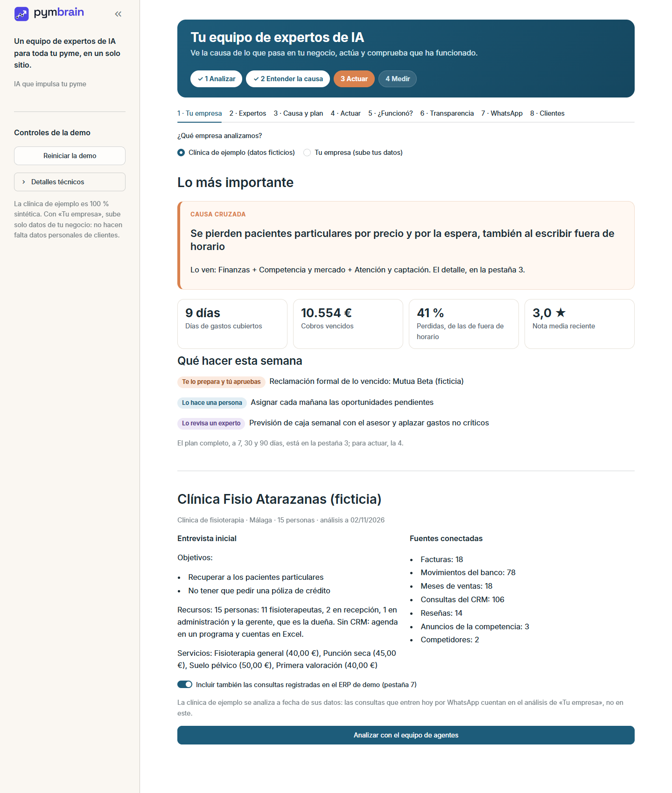
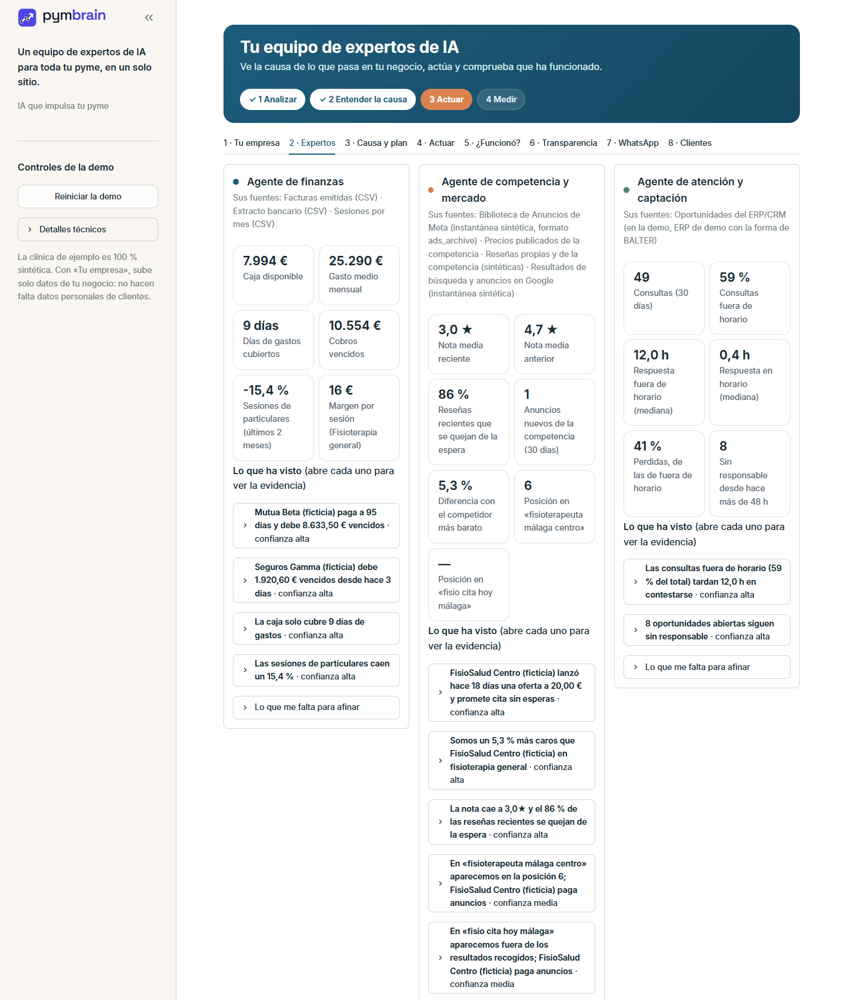
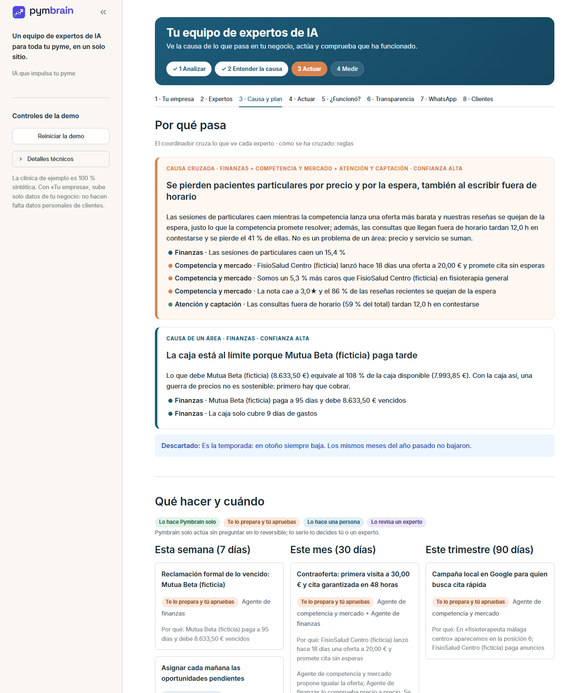
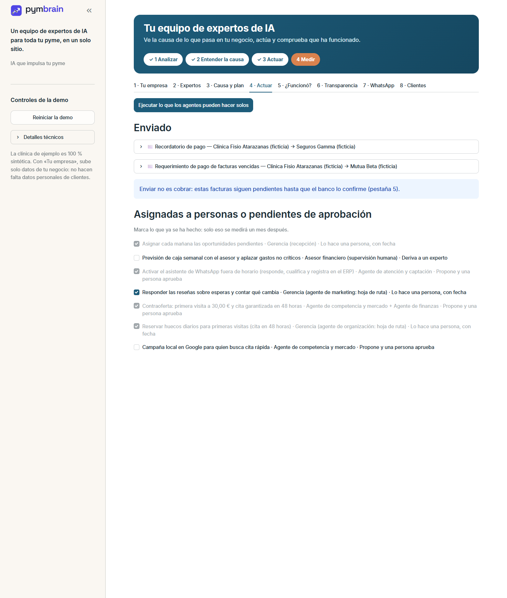
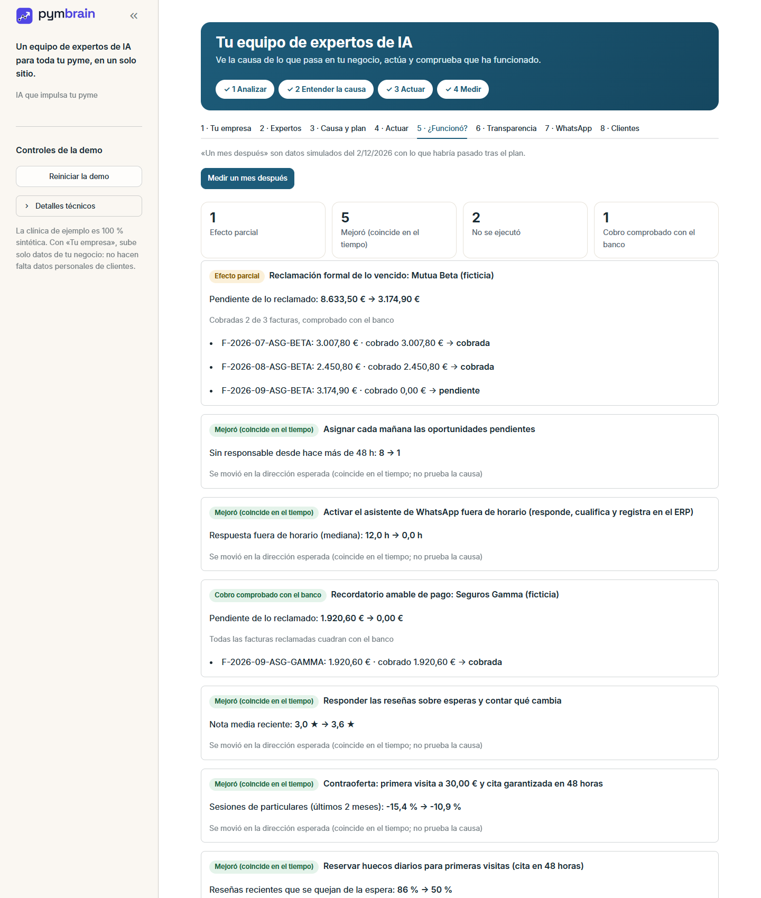
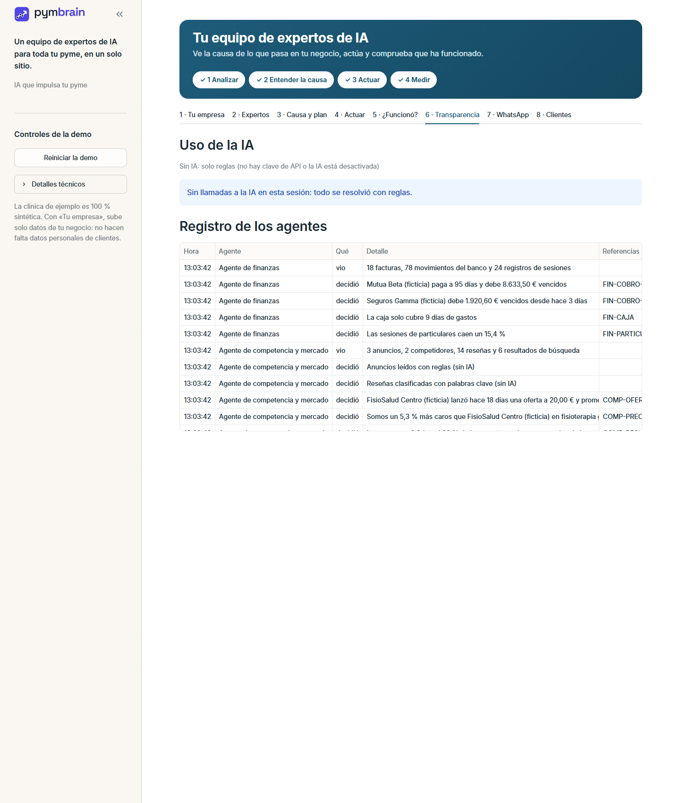
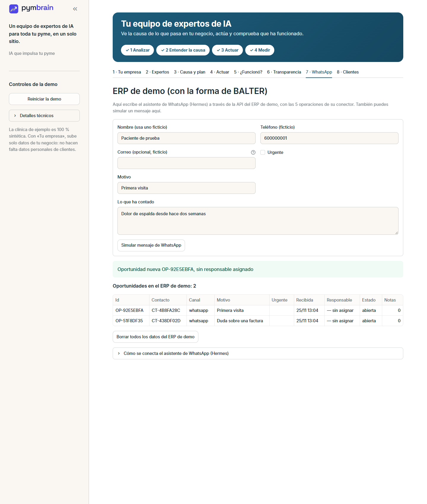
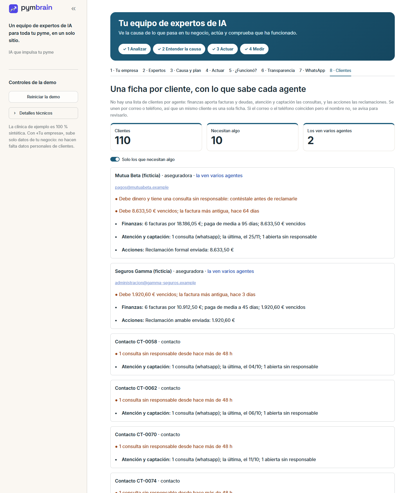

IA que impulsa tu pyme.
Tres agentes especialistas (finanzas, competencia, y atención y captación), cada uno con sus fuentes, y un coordinador que cruza lo que ven. Encuentra la causa, propone un plan a 7, 30 y 90 días, actúa con niveles de autonomía y, un mes después, mide si funcionó. Si la pyme no tiene CRM, genera una ficha única por cliente con lo que sabe cada agente.
| Repositorio | https://github.com/telee04maro/DiverxiaEscuadronMCP (también, el ZIP del código en el Drive) |
|---|---|
| Probarlo en 5 minutos | uv sync · uv run streamlit run src/vigia/app.py → «Analizar con el equipo de agentes». Sin clave de IA funciona igual, con reglas. |
| IA | Claude Opus 5.5 cruza y redacta; Haiku 5.5 lee anuncios y reseñas. 0,04 $ por análisis, medido. Todo lo que escribe se comprueba contra los datos. |
| Datos | Clínica de fisioterapia ficticia, datos sintéticos (las bases prohíben datos personales). |
| Calidad | 185 tests, tres auditorías independientes (red team) con todos los hallazgos corregidos, rendimiento medido con oha. |
Capturas del panel tomadas con el código entregado, en modo reglas (sin clave de IA): las cifras son las mismas que con Claude real; con Claude, la causa se redacta con otras palabras. Cada sección dice qué mirar.
Qué mirar: la clínica de ejemplo y sus fuentes conectadas. Con «Tu empresa», cualquier pyme entra con una entrevista y sus Excel o CSV, con plantillas en español.

Qué mirar: cada hallazgo con su evidencia y su confianza. Caja para 9 días, la competencia anuncia una primera sesión a 20 €, el 59 % de las consultas llega fuera de horario. Y «lo que me falta para afinar»: no inventa datos.

Qué mirar: la causa cruzada, qué agentes la sostienen y las hipótesis descartadas con datos («no es la temporada»). Debajo, el plan a 7, 30 y 90 días con su nivel de autonomía.

Qué mirar: el recordatorio amable sale solo; la reclamación formal, redactada por Claude (en estas capturas, con la plantilla del modo reglas) y verificada, espera aprobación. Enviar no es cobrar. Lo que hace una persona se marca como hecho.

Qué mirar: los cobros se comprueban con el banco (2 de 3 facturas de la aseguradora, la otra al completo). La respuesta fuera de horario pasa de 12 h a minutos y las quejas por la espera, del 86 % al 50 %. Pymbrain dice «coincide», no «lo causó»; lo que no se hizo no se mide.

Qué mirar: qué vio, decidió e hizo cada agente, y cada llamada a Claude con sus tokens, su coste y su tiempo.

Qué mirar: el asistente de WhatsApp registra las consultas en el ERP de demo sin duplicar: el segundo mensaje del mismo paciente va como nota. Aguanta 1.500 peticiones por segundo sin rechazos (medido con oha).

Qué mirar: una ficha por cliente con lo que sabe cada agente. Mutua Beta debe 8.633,50 € y acaba de escribir por WhatsApp sin que nadie le conteste: «contéstale antes de reclamarle». Ningún agente lo ve solo.
